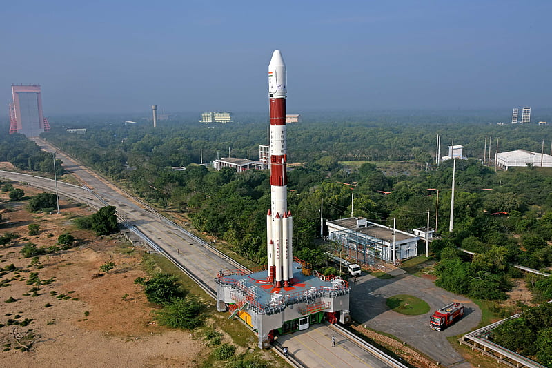
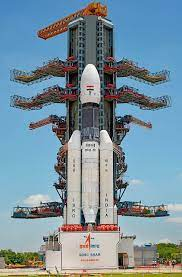
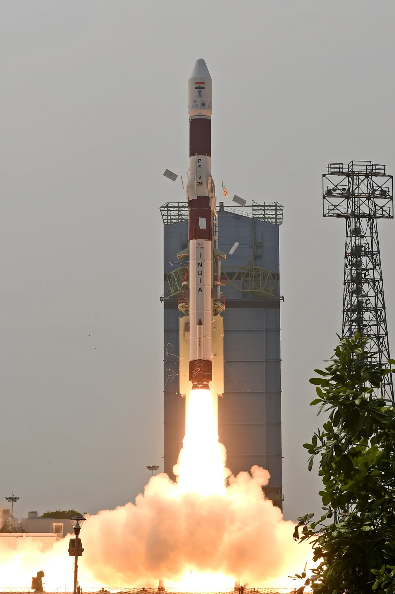
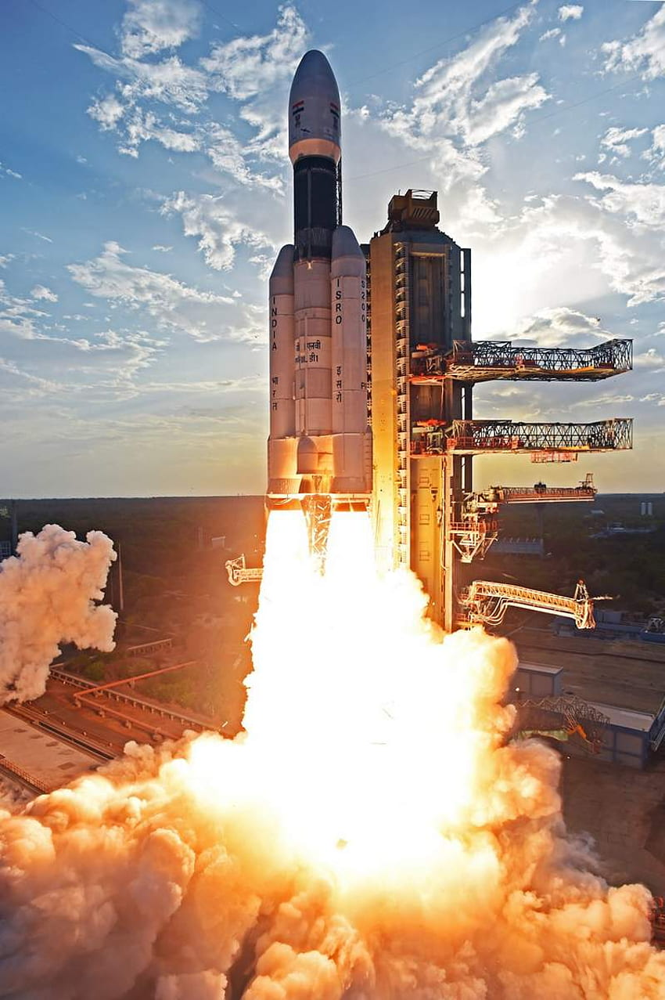
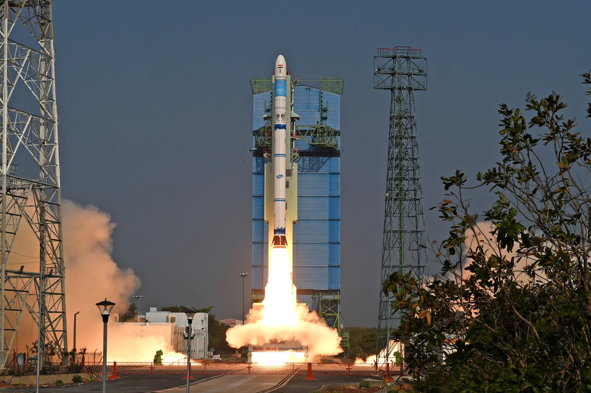

HISTORY AND DEVELOPMENT OF ISRO
The Indian National Committee for Space Research (INCOSPAR) was set up in 1962 by Prime Minister Jawaharlal Nehru on the suggestion of Dr. Vikram Sarabhai. Initially there was no dedicated ministry for the space programme and all activities of INCOSPAR relating to space technology continued to function within the DAE. IOFS officers were drawn from the Indian Ordnance Factories to harness their knowledge of propellants and advanced light materials used to build rockets. H.G.S. Murthy, an IOFS officer, was appointed the first director of the Thumba Equatorial Rocket Launching Station,where sounding rockets were fired, marking the start of upper atmospheric research in India. An indigenous series of sounding rockets named Rohini was subsequently developed and started undergoing launches from 1967 onwards. Waman Dattatreya Patwardhan, another IOFS officer, developed the propellant for the rockets.
The Indian Space Research Organisation (ISRO) has a rich history of significant achievements in space exploration and technology development. Here's a brief overview of ISRO's history:
|

|
International Collaboration
- ESA formed partnerships with various space agencies globally, including NASA and Roscosmos.
- Collaborations focused on advancing space exploration and scientific discovery through shared knowledge and joint missions.

Future Initiatives
Advancing Technology:
- Space Technology: ESA is at the forefront of developing cutting-edge space technologies.
- Exploration Missions: Future initiatives include exploring Jupiter's moons and Mars sample return missions.
Innovation and Discovery:
- Continued Innovation: ESA is dedicated to ongoing innovation, pushing the boundaries of space exploration.
- Scientific Discovery: The agency aims to contribute to significant scientific discoveries in the coming years.
Culmination:
Global Impact:
- Scientific Research: ESA's commitment to scientific research has a global impact on our understanding of the universe.
- Technological Advancements: The agency's technological advancements benefit not only Europe but also the broader international community.
-
Exciting Future:
- Continued Efforts: ESA's continued efforts pave the way for an exciting future in space exploration and scientific research.

LAUNCH VEHICLES
The Indian Space Research Organisation (ISRO) has developed several launch vehicles
over the years to place satellites into orbit and conduct various space missions.
These launch vehicles are designed to meet specific payload requirements and are
known for their cost-effectiveness and reliability. Here are some of the key ISRO
launch vehicles:
Satellite Launch Vehicle (SLV):SLV was India's first experimental satellite launch vehicle, and it successfully launched the Rohini satellite, India's first satellite, into orbit on July 18, 1980.It has taken approximately seven years to realise the vehicle from start. The solid motor case for first and second stage are fabricated from 15 CDV6 steel sheets and third and fourth stages from fibre reinforced plastic |
 |
|  |
Augmented Satellite Launch Vehicle (ASLV):ASLV was developed to enhance the payload capacity compared to the SLV. It was used for launching a series of satellites in the 1980s and 1990s, including the SROSS series for remote sensing. |
Polar Satellite Launch Vehicle (PSLV):The PSLV is one of ISRO's most versatile and successful launch vehicles. It is capable of launching satellites into polar orbits and sun-synchronous orbits. PSLV has an impressive track record for launching satellites for both domestic and international customers. |
 |
|  |
Geosynchronous Satellite Launch Vehicle (GSLV):GSLV is designed to launch heavier payloads into geosynchronous transfer orbit (GTO). It has been used for launching communication satellites and has several variants, including GSLV Mk I, Mk II, and GSLV Mk III (LVM-3), which is also known as the GSLV Mk III or LVM-3. |
Small Satellite Launch Vehicle (SSLV):ISRO is developing the SSLV, a dedicated small satellite launch vehicle to provide cost-effective launch options for small payloads. The SSLV is designed to cater to the growing demand for launching small satellites into orbit. |
 |